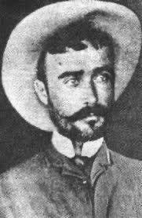

Los Hilos de Monik
¿Qué pasó con el Dr. Máximo Zertucha?
Publicado el 20 de julio de 2020 - 13 tweets - Hilo original en Twitter
1
Ayer, después de escribir sobre la muerte de Antonio Maceo y Panchito Gómez Toro, me quedé pensando en el Dr. Máximo Zertucha.
¿Qué pasó con él? ¿Por qué no se le mencionó más?
Para mi sorpresa, me enteré que el haber sobrevivido le trajo muchos problemas.
2
La muerte de Maceo fue un acontecimiento tremendamente mediático.
Existen 47 versiones distintas - contadas por cubanos y españoles presentes en San Pedro - de cómo ocurrió.
Varias de estas versiones acusan a Zertucha de haber traicionado, e incluso asesinado, a Maceo.
3
El 10 de diciembre, tan sólo 2 días después de la muerte de Maceo, Zertucha se entregó a los españoles y se acogió al indulto de San Felipe.
Consigo llevó posesiones y documentos de Maceo que presentó como pruebas de su muerte, dando abundantes detalles.
¿Por qué?
4
Trataré de ser breve y dar los argumentos de quienes lo acusaron y defendieron.
Zertucha conoció a Maceo en 1892 siendo médico en la Compañía Trasatlántica de Vapores.
Puede decirse que lo idolatró, haciéndose separatista y dejando su trabajo para quedarse en Cuba.
5
En febrero de 1896 se unió a los independentistas y un mes después Maceo le nombró Jefe de Sanidad de las tropas invasoras y su médico personal.
Todos los testigos de la época coinciden en que la única razón por la que Zertucha estaba en la guerra era por Maceo.
6
Años después, Zertucha dijo que la muerte de Maceo le provocó una profunda depresión. Y ello, unido a desavenencias internas (se dice que se llevaba muy mal con Miró y Argenter, quien tambien adoraba a Maceo) lo llevó a abandonar el ejército y pedir el indulto.
,7
Tan pronto se supo la muerte de Maceo (confirmada con los objetos presentados por Zertucha) la prensa de la época lo acusó de traidor.
Se dijo que Weyler le había pagado 50,000 dólares por traicionarlo. Que lo había envenenado. E incluso que lo asesinó él.
8
El 13 de diciembre el NY Herald y el Mail and Express afirmaron que Zertucha había envenenado a Maceo.
Ese mismo día el World dijo que había sido en una reunión secreta en la que Maceo iba a negociar la independencia de Cuba, y que le sirvieron bistecs envenenados.
9
Incluso, el Congreso de los EE.UU. denunció el asesinato. Y se nombró a una comisión para investigar dichas alegaciones.
José Miro y Estrada Palma estuvieron entre los que acusaron a Zertucha, en público y en correspondencia.
10
Y 30 médicos del Cuerpo de Sanidad del Ejército Libertador firmaron una carta en su contra (años después algunos dijeron que su nombre se puso sin su consentimiento)
Zertucha siempre lo negó y respondió a cada uno de los artículos y alegaciones.
11
El origen de estas acusaciones puede quizás encontrarse en Federico Perez Carbó, quien luego reconociera que ante la magnitud de la noticia de la muerte de Maceo, decidió levantar el espíritu patriótico responsabilizando al general español Arolas y al médico Zertucha.
12
Entre quienes apoyaron a Zertucha, estuvieron Máximo Gómez y José Mayía Rodríguez.
Leonardo Griñan, biógrafo de Maceo, considera que no lo traicionó, sino que muerto este perdió su razón para estar en la guerra.
En 1899 un Consejo de Guerra lo exoneró de toda culpabilidad
13
Después de la guerra, Zertucha regresó a su pueblo, Melena del Sur, donde ocupó el cargo de concejal del ayuntamiento y luego jefe de sanidad.
Murió en 1905 a los 49 años, debido a un cáncer de lengua.